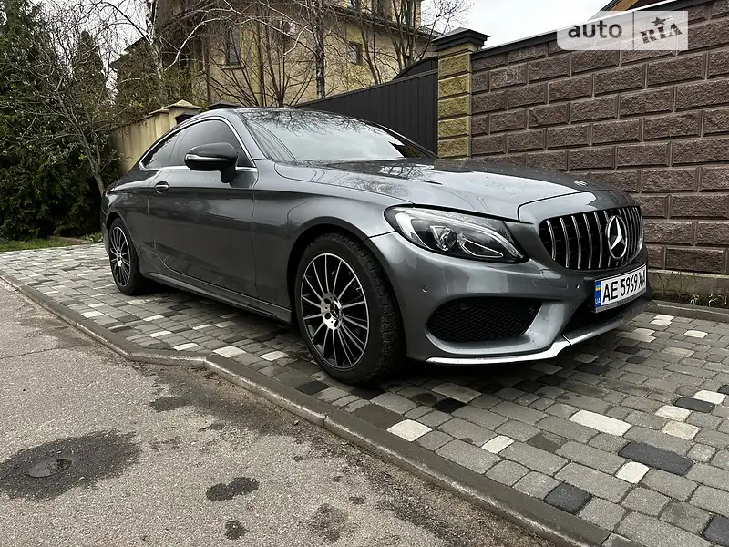
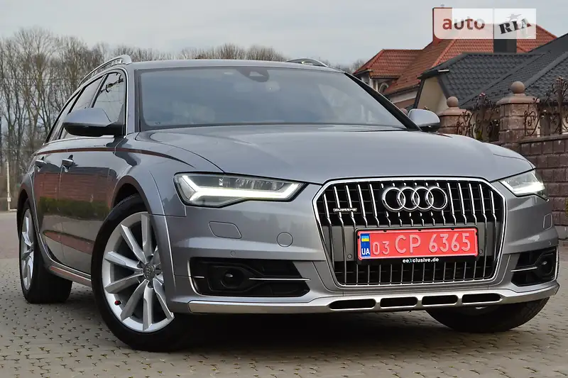
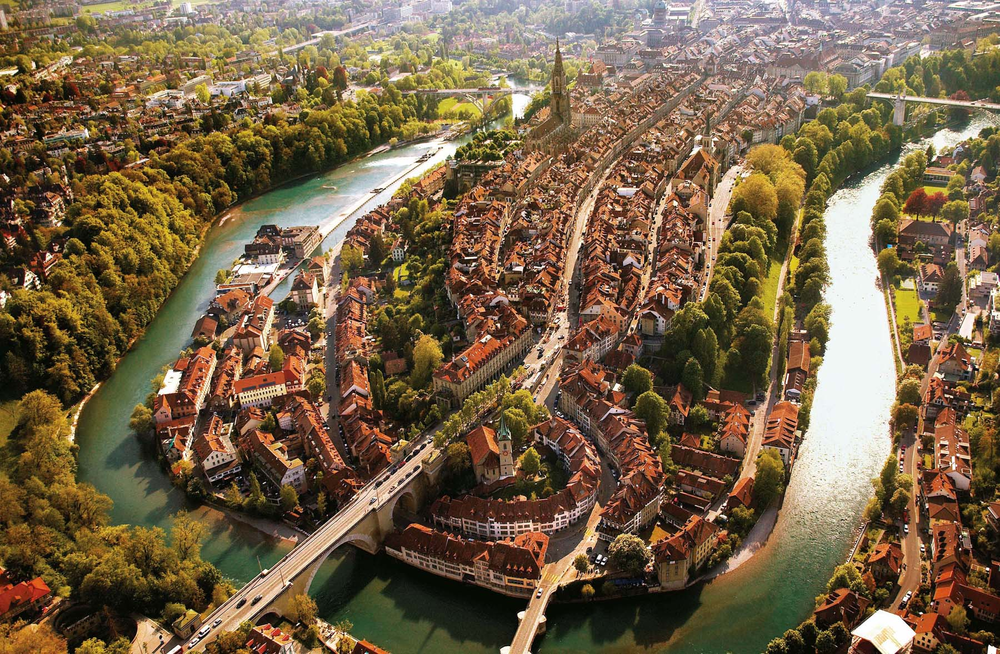

Завдання 1
| Заголовок | |
|---|---|
| Дані, вирівняні по лівому краю комірки | Дані, вирівняні по правому краю комірки |
| 25% ширини таблиці | 75% ширини таблиці |
Завдання 2
| Назва | Модель | Ціна | Фото |
|---|---|---|---|
| BMW | X1 18i Steptronic | 1 223 700 грн | |
| Toyota | Yaris Cross 1.5 MHEV e-CVT | 1 069 561 грн | |
| Mercedes-Benz | C-Class 2018 | 1 279 047 грн |  |
| Audi | A6 Allroad 2018 | 1 297 912 грн |  |
Завдання 3
| Швейцарія | ||||
|
||||
|  | Берн | |||
Завдання 4
| № | Прізвище | Ім'я | По батькові | Рік народження |
|---|---|---|---|---|
| 1 | Гординський | Максим | Сергійович | 2004 |
| 2 | Кондратенко | Данило | Олексійович | 2005 |
| 3 | Суліменко | Максим | Олександрович | 2005 |
| 4 | Кириченко | Даниїл | Миколайович | 2005 |
| 5 | Ваць | Ярослав | Русланович | 2005 |
| 6 | Жирнов | Олександр | Сергійович | 2005 |
| 7 | Медведєв | Іван | Миколайович | 2005 |
| 8 | Стешенко | Артур | Миколайович | 2005 |
| 9 | Волик | Максим | Володимирович | 2005 |
| 10 | Гора | Максим | Володимирович | 2005 |
Завдання 5
| Характеристики | |||
| Кількість студентів | Якість успішності | ||
| Спеціальність | Ком'ютерна інженерія | 250 | 80% |
| Телекомунікації та радіотехніка | 200 | 75% | |
| Електромеханіка | 150 | 85% | |
Завдання 6
| Спеціальність 123 - Комп'ютерна інженерія | |
|---|---|
Освітньо-професійна програма має прикладну орієнтацію та забезпечує акцент на формування базових фахових компетентностей з інформаційних технологій, комп’ютерних систем та мереж. Теоретичний зміст предметної області ґрунтується на базових поняттях принципів, методів, програмно-технічних засобів та технологій створення, використання та обслуговування комп’ютерних систем та мереж, вбудованих і розподілених обчислень. Основний фокус освітньої програми спрямований на надання загальної вищої освіти в галузі |
інформаційних технологій: технічних (апаратних) засобів та системного програмного забезпечення комп’ютерних систем та мереж. Програма орієнтована на сучасний та перспективний стан розвитку інформаційних технологій та комп’ютерних систем, практичне використання апаратного та програмного забезпечень для вирішення науково-технічних та прикладних задач. Рівень підготовки фахівців забезпечується міжнародною співпрацею в науковій та освітній сферах, наявністю спеціалізованих лабораторій. |
Виконав студент групи 103-ТК
Кондратенко Данило